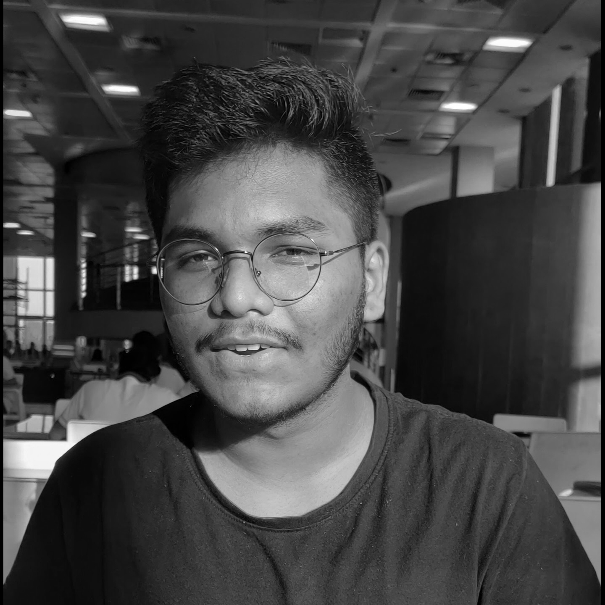

Our Team
2019

Varun Perumalla
Overall Head & Licensee
He is currently the Co-founder and CEO of CRIOT Innovations, a startup catering to intelligent, smart homes. Varun is also one of the founding heads of E-summit IIT Hyderabad, who found his calling in Marketing and Entrepreneurship. He has served in multiple roles with various student bodies at college, including Ecell IIT Hyderabad, EML IIT Hyderabad, and other organizations like T-Hub, Pure EV, Hult Prize Foundation, Gen Z Media, among others.

Shepal Bhansali
Content and curation core

Shreya Balakrishnan
Design Core

Sourav Sarkar
Marketing and Sales Core
Let's make TEDxIITHyderabad 2020 edition a grand success!